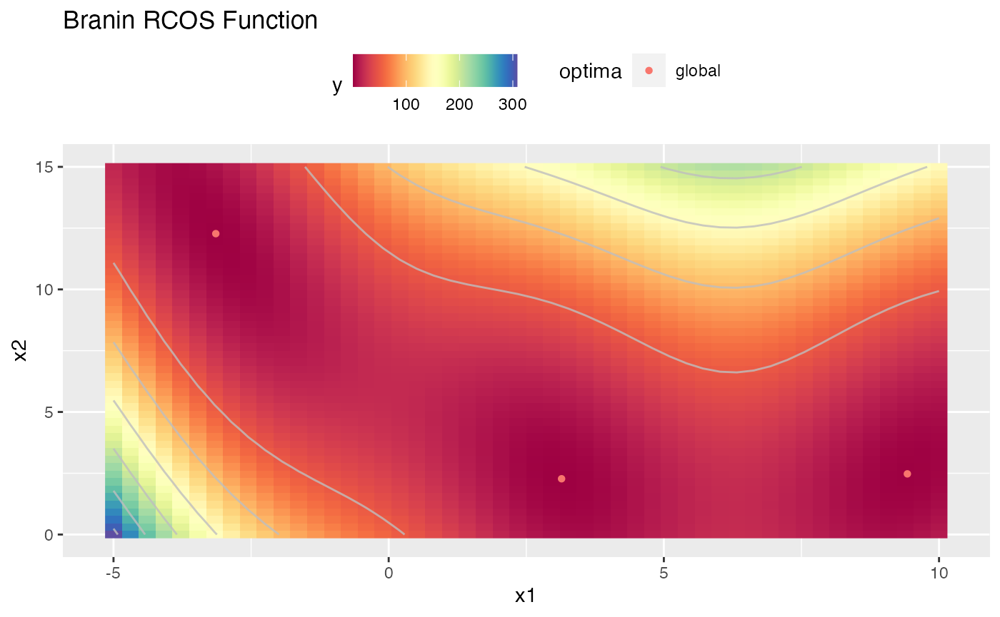
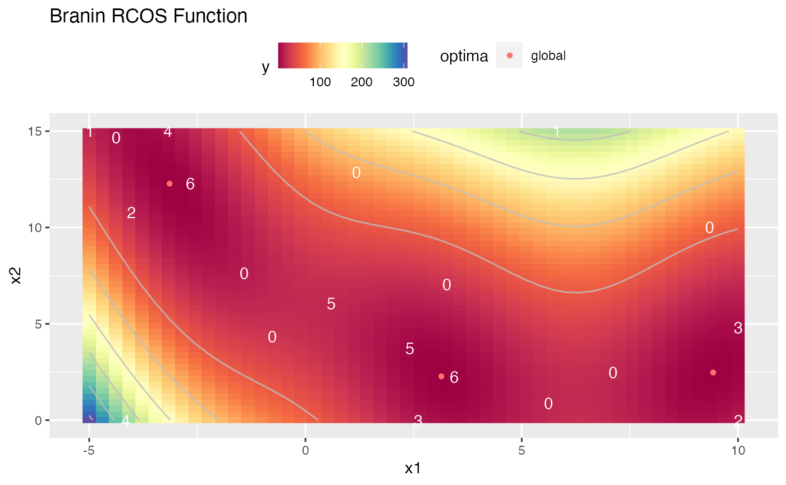
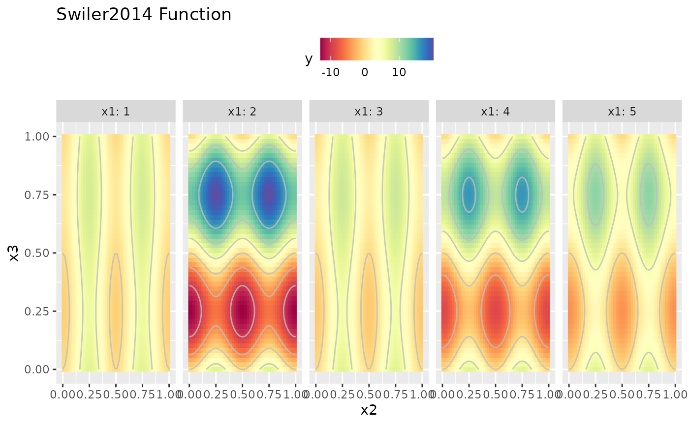
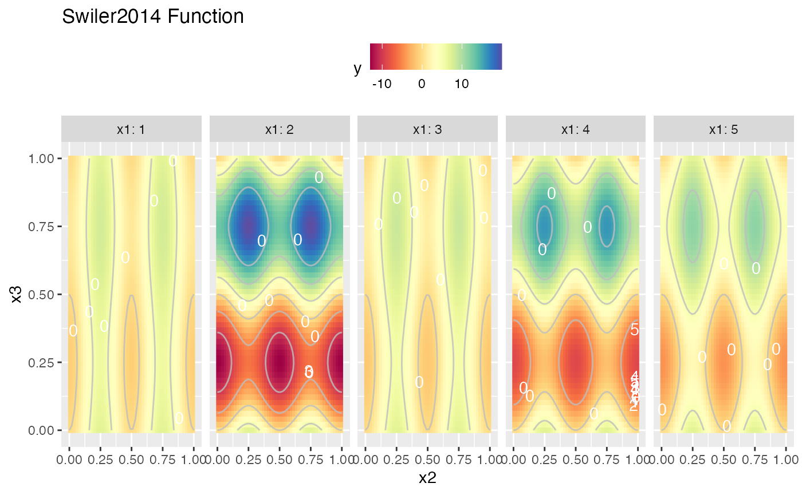
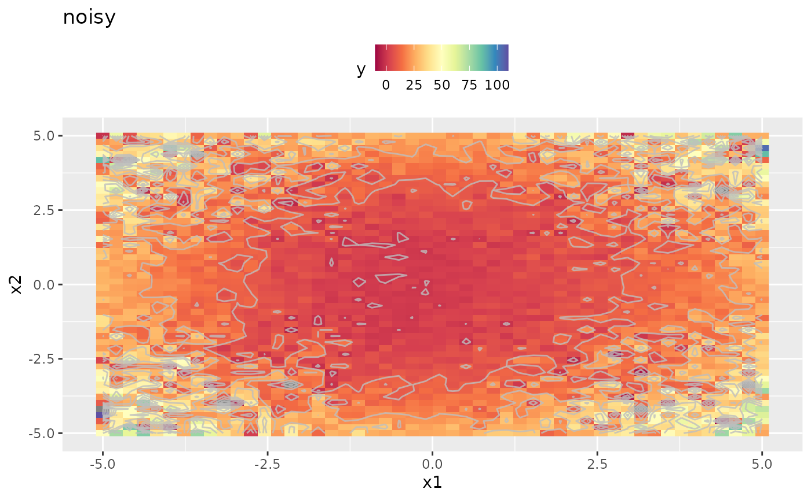
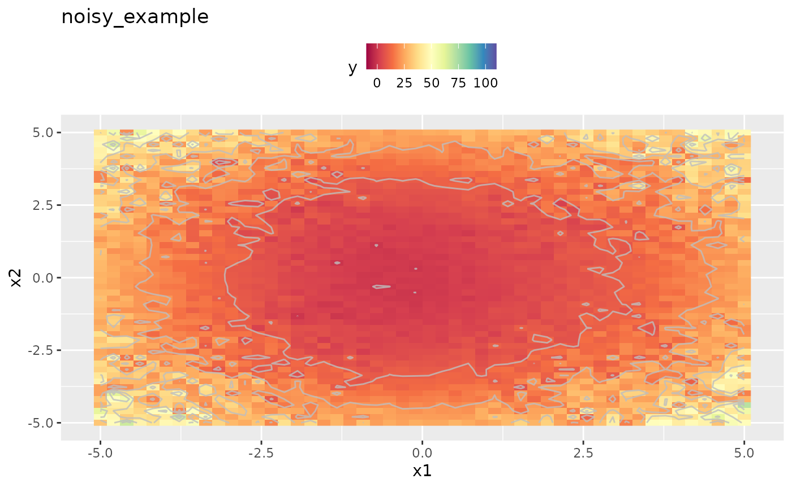

Purpose
This Vignette will give you a short introduction how mlrMBO can be configured to make use of multicore or other parallel infrastructures by evaluating multiple points (each on one CPU) per MBO iteration, to improve the speed of the model-based optimization.
Prerequisites
The parallelization of multiple evaluations of the target function is realized internally with the R package parallelMap. This package offers simple parallelization with various different back-ends. For details on the usage see the parallelMap github page, which offers a nice tutorial and describes all possible back-ends thoroughly. In this example we use a multicore back-end, which is also the most common use-case. Note, that the multicore parallelization does not work on windows machines.
Parallelization through multi point proposals
Like always let’s start with the function we want to optimize:
library(mlrMBO) library(ggplot2) obj.fun = makeBraninFunction() # visualize the function autoplot(obj.fun, render.levels = TRUE, show.optimum = TRUE)

In our example we will have two CPUs that we want to utilize for the evaluation of the black-box function.
library(mlrMBO) ctrl = makeMBOControl(propose.points = 2)
There are multiple methods available to propose multiple points. Each has it’s advantages and disadvantages. The choice is mostly bound to your choice of the infill criterion, so we will decide for that first. As we have a real valued parameter space of our objective function, the expected improvement is usually the best choice
ctrl = setMBOControlInfill(ctrl, crit = crit.ei)
Multi point proposal methods
The available methods to propose multiple points are as follows: * cl: Proposes points by the constant liar strategy. The constant liar is usually a good choice for the augmented expected - and the expected improvement. The first point is obtained by the ordinary infill optimization, like it is used to propose one point. To obtain the 2nd point we assume that the evaluation at the first point is finished. As we don’t really have an outcome yet, we set the outcome to a lie. Usually the minimum of all observed outcomes is chosen as the lie. This lie is used to update the model in order to propose subsequent point. The procedure is repeated until propose.points proposals are generated. * cb: As learnt from Vignette for Mixed Space Optimization we prefer the lower/upper confidence bound (CB) when we use a random forest as a regression method for the surrogate. For the CB the parameter \(\lambda\) is not fixed. This characteristic can be used to obtain multiple proposals by optimizing the CB for different lambda values, which are drawn from an exp(1)-distribution. Each lambda value leads to a slightly different infill criteria function with different optima resulting in different proposals. * multicrit: Use a evolutionary multicriteria optimization. This is a (mu+1) type evolutionary algorithm and runs for multicrit.maxit generations. The population size is set to propose.points. For a detailed description of the algorithm check the paper MOI-MBO: Multiobjective Infill for Parallel Model-Based Optimization.
Constant Liar
After having said that, and as we already decided for the expected improvement because we want to use Kriging for the surrogate as we have a purely numeric parameter space we decide for the constant liar as a multi point proposal method. So we have to define:
ctrl = setMBOControlMultiPoint(ctrl, method = "cl", cl.lie = min)
For parallelization the termination criterion offers two useful options. We can limit the number of total evaluations of the objective function as well as we can limit the number of MBO iterations. Assuming our initial design is of size 8 and we allow 6 iterations we will get 20 evaluations of the objective function as we decided to have two evaluations per iteration by setting propose.points = 2. so for our example the following two settings will lead to the same result:
ctrl = setMBOControlTermination(ctrl, iters = 6) ctrl = setMBOControlTermination(ctrl, max.evals = 20) # for the choosen settings will result in the same number of evaluations.
For simplification we will let MBO automatically decide for the regression method and the initial design. As the parameter space is purely numeric MBO will use Kriging, which is exactly what we want.
All we have to do now to initialize the parallel execution of the objective function is to call parallelStartMulticore() from the parallelMap package.
# Kriging can create a lot of console output, which we want tu surpress here: configureMlr(on.learner.warning = "quiet", show.learner.output = FALSE) library(parallelMap) parallelStartMulticore(cpus = 2, show.info = TRUE) res = mbo(obj.fun, control = ctrl, show.info = FALSE) parallelStop()
As you can see from the console output of parallelMap the initial design will also be evaluated in parallel.
In the end a small plot that uses the opt.path which is stored in the result of the MBO Optimization process to visualize which points were proposed in which iteration. The zeros are the points from the initial design, 1 for the first iteration and so on.
autoplot(obj.fun, render.levels = TRUE, show.optimum = TRUE) + geom_text(data = as.data.frame(res$opt.path), mapping = aes(label = dob), color = "white")

Confidence Bound
If we decided to use the confidence bound as an infill criterion, because e.g. the parameter space contains discrete values and we decided for the random forest as an infill criterion, then we suggest to use the random lambda method to generate multiple proposals per iteration. Note that this time we rely on MBO to automatically use the random forest for the surrogate as the objective function contains the discrete variable x1. Also we now specify the number of initial design points manually according to the number of levels of the discrete variable.
obj.fun = makeSwiler2014Function() autoplot(obj.fun, render.levels = TRUE)

ctrl = makeMBOControl(propose.points = 2) ctrl = setMBOControlInfill(ctrl, crit = crit.cb) ctrl = setMBOControlMultiPoint(ctrl, method = "cb") ctrl = setMBOControlTermination(ctrl, iters = 5) design = generateDesign(n = 5*8, par.set = getParamSet(obj.fun)) library(parallelMap) parallelStartMulticore(cpus = 2, show.info = FALSE) res = mbo(obj.fun, control = ctrl, design = design, show.info = FALSE) parallelStop() autoplot(obj.fun, render.levels = TRUE) + geom_text(data = as.data.frame(res$opt.path), mapping = aes(label = dob), color = "white")

Parallelization of the objective function
In some cases it is actually possible to parallelize the objective function. This can also be done with the help of parallelMap.
Custom objective function
One simple case to make use of parallelization is when we have a noisy function and we just evaluate it repeatedly to reduce the noisiness. The following example illustrates that, but also can be useful to show you how to parallelize your objective in a more sophisticated way.
Let’s start with the normal approach:
# noisy objective function fn = function(x) { sin(x[1]) + cos(x[2]) + sum(x^2) + rnorm(1, sd = 1 + abs(prod(x))) } # very noisy normal smoof function ps = makeNumericParamSet("x", len = 2, lower = -5, upper = 5) obj.fun.single = makeSingleObjectiveFunction(name = "noisy", fn = fn, noisy = TRUE, par.set = ps) # unified color scale for better comparison later general.scale = scale_fill_gradientn(limits = c(-10, 110), colors = RColorBrewer::brewer.pal(11, "Spectral")) # noisy output autoplot(obj.fun.single, render.levels = TRUE) + general.scale ## Scale for 'fill' is already present. Adding another scale for 'fill', which ## will replace the existing scale.

Now let’s create an objective function that uses parallelization internally by using the function parallelMap() of the equally named package.
parallelRegisterLevels(levels = "objective") obj.fun.parallel = makeSingleObjectiveFunction( name = "noisy_example", fn = function(x) { rep.x = replicate(4, x, simplify = FALSE) res = parallelMap(fn, rep.x, simplify = TRUE, level = "custom.objective") mean(res) }, noisy = TRUE, par.set = makeNumericParamSet(id = "x", len = 2, lower = -5, upper = 5), vectorized = FALSE, has.simple.signature = TRUE ) autoplot(obj.fun.parallel, render.levels = TRUE) + general.scale ## Scale for 'fill' is already present. Adding another scale for 'fill', which ## will replace the existing scale.

As we can easily see the replicated and averaged evaluation of the target function apparently smoothed the output. This will improve optimization directly. However the objective function is still noisy and we have to adapt the settings a little. Details are given in the Vignette about noisy optimization.
library(mlr) ctrl = makeMBOControl(final.method = "best.predicted") ctrl = setMBOControlTermination(ctrl, iters = 5L) ctrl = setMBOControlInfill(ctrl, crit = crit.aei) parallelStartMulticore(cpus = 2L, show.info = TRUE, level = "custom.objective") res.parallel = mbo(obj.fun.parallel, control = ctrl, show.info = FALSE) parallelStop() res.parallel
As you can see in the output of parallelMap we now parallelize the level custom.objective and not as previously mlrMBO.feval. If you forget to register your own level parallelMap will parallelize the first call of parallelMap and that would be the call we do internally to evaluate the proposed points.